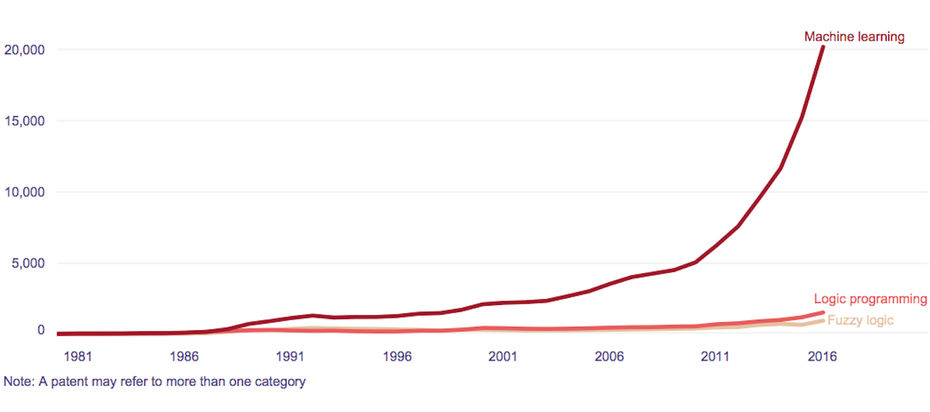

La peur et l’enthousiasme provoqués par l’I.A
L’évolution de cette Intelligence Artificielle est assez soudaine et la plupart de la population, qu'elle soit française ou mondiale à peur que cette évolution ait trop d'ampleur sur notre quotidien et notre vie en générale. Or la population française est l’une des plus effrayée à ce sujet. Par exemple, prenons la Chine comme moyen de comparaison. En effet une majorité des Français sondés s'attendent à un impact négatif sur leur salaire ou leur pouvoir d'achat (65% contre seulement 21% en Chine), ainsi que sur l'emploi (59% craignent un impact négatif sur les capacités de recrutement et 50% sur la sécurité d'emploi contre 29% en Chine). Sans compter les craintes de déshumanisation du travail et l'augmentation des inégalités dues à l'IA. Ces préoccupations sont globalement partagées par les différents pays interrogés, y compris pour les personnes travaillant déjà avec de l'IA. Ainsi, plus de 3 personnes sur 4 redoutent une surveillance et un contrôle accrus de leur travail. C'est le cas de 82% des personnes dans les organisations qui les utilisent déjà.
En parallèle, plus de deux tiers des travailleurs craignent également que cela entraîne des pertes d'emplois en raison d'une charge de travail réduite (76% lorsqu'ils utilisent déjà l'IA). Enfin, les salariés redoutent aussi largement une baisse de la cohésion sociale et des problèmes éthiques en matière de protection des données. Mais il reste de l’espoir. Puisque actuellement, plus d'une personne active sur cinq travaille déjà dans une organisation où l'intelligence artificielle est utilisée à travers des outils ou des applications (22%). Pour autant, ce constat est très contrasté selon les pays. Ainsi, la Chine est la plus avancée en la matière (31% des salariés travaillant dans des organisations utilisant déjà l'IA), suivie du Canada (26%) et des États-Unis (24%). Loin derrière, l'Europe est à la traîne avec le Royaume-Uni (20%), l'Espagne (18%), la France (16%) et enfin l'Allemagne (15%). Les employés étant déjà au contact de l'IA sont ceux qui sont les plus positifs quant aux conséquences sur leur travail. Parmi eux, 75% estiment que l'IA a eu un impact positif sur leur efficacité, 75% sur leurs résultats, 74% sur la façon dont leur travail est organisé. Les salariés utilisant déjà l'IA sont encore plus enthousiastes que les autres lorsqu'ils évoquent l'impact de l'IA dans les cinq prochaines années : plus de 8 sur 10 considèrent que cela aura un impact positif sur leur organisation, notamment sur la croissance et l'organisation de l'entreprise.
Un futur de cyberattaques qui effraie
Si leur principale préoccupation est l’impact qu’aura cette technologie sur leur vie professionnelle, les conséquences de la digitalisation et de leur environnement dans la sphère personnelle les inquiètent aussi. La logique est implacable, plus la population dépendra des appareils connectés, plus ces derniers pourraient être utilisés à mauvais escient par des hackers, plus les utilisateurs seront vulnérables et exposés aux problèmes de cybersécurité. Selon l’étude The Global State of Information Security de PwC, la grande majorité des Français redoute le piratage des technologies qui les entourent : 36 % craignent une interruption du fonctionnement des machines, une mauvaise utilisation de leurs données sensibles, une atteinte à la propriété physique, 32 % une menace pour la qualité des produits et 25 % un risque pour leurs vies. Philippe Trouchaud, associé Cyber Intelligence chez PwC, constate « une réelle professionnalisation des attaquants. Leurs motivations relèvent désormais beaucoup plus d’un intérêt économique (détournement d’argent, vol d’actifs…) que du simple caractère malveillant.
Les attaques, plus ciblées, mieux préparées mais aussi mieux réparties sur la durée, coûtent plus cher. » Dans les faits, aussi bien en France que dans le reste du monde, les cyberattaques augmentent. Ce phénomène inquiétant n’est pas près de s’arrêter car de très nombreux acteurs publics et privés investissent massivement dans l'IA pour développer leur économie via la modernisation des entreprises et des sociétés dans lesquelles nous vivons.
Une I.A à la hauteur
Ils ont dû oublier l’aide grandiose de l’I.A durant la crise sanitaire. La première application de l’IA attendue face à une crise sanitaire est certainement l’assistance aux chercheurs pour concevoir un vaccin, à même de protéger les soignants et d’endiguer la pandémie. La biomédecine et la recherche s’appuient sur de très nombreuses techniques parmi lesquelles les diverses applications de l’informatique et de la statistique ont déjà offert depuis bien longtemps des apports. L’emploi de l’IA s’inscrit donc dans cette continuité. Les prédictions de la structure du virus générées par l'IA a déjà fait gagner des mois d'expérimentation aux scientifiques. L’IA semble avoir apporté un appui notable en ce sens, même si elle est limitée du fait de règles dites « continues » et d’une combinatoire infinie pour l’étude du repliement des protéines. La startup américaine Moderna s’est illustrée par sa maîtrise d’une biotechnologie fondée sur l’acide ribonucléique messager pour laquelle l’étude du repliement des protéines est essentielle. Elle est parvenue à réduire significativement le temps pour développer un prototype de vaccin testable sur l’homme grâce à l’appui de la bioinformatique, dont l’IA fait partie intégrante. Donc pour conclure, l'Intelligence Artificielle est redoutée par la plupart des populations telle que la population française, mais elle reste convaincante et certaines personnes ne sont pas effrayées mais émerveillées devant cette merveille de la technologie. Certains ne veulent pas perdre leur travail et donc ont peur de l’évolution de l’I.A, les autres trouvent que l’I.A est bien plus performant. Et enfin l’I.A nous sert déjà beaucoup et nous a beaucoup aidé, tel que dit auparavant contre la crise de la covid 19.
Une technologie qui effraie mais qui sert
Cette technologie est donc effrayante pour une grande partie de la population mais celle-ci à quand bien même aidée et aide de plus en plus notre population, cette peur n’est je pense que la peur de l’inconnu, et que lorsque l’I.A sera normalisée, personne ne sera plus vraiment effrayé, c’est juste un produit de la prochaine génération qui existe depuis des générations, depuis le temps qu’on en parle on a eu du temps pour se faire des préavis et des clichés dessus, cela doit être une grande partie de la peur de la population. L’I.A ne fera plus peur pour très longtemps !
Bibliographie
L. Alexandre, « Nous aurons l’intelligence artificielle que nous méritons », 14 novembre 2017. Consulté le: 6 novembre 2022. [Dailymotion]. Disponible sur: https://www.frenchweb.fr/...
Marion Montaigne «Terminator, c’est pour quand? », Tu mourras moins bête, Youtube, 8 juin 2016. Consulté le: 6 novembre 2022. [Dessins de vulgarisation scientifique]. Disponible sur: https://www.youtube.com/...